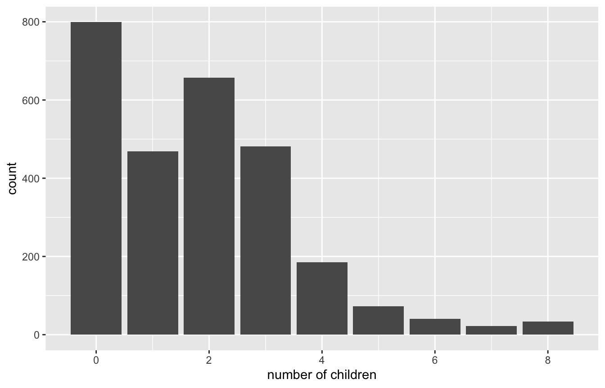
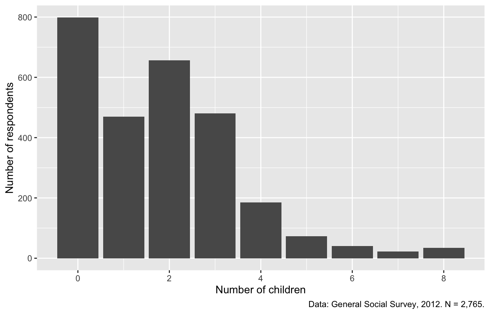

install.packages(c("tidyverse", "psych", "haven"))1 Getting Started with R
This chapter covers the basic workflow used throughout the book: loading packages, reading in a dataset, and exploring it with descriptive statistics, frequency tables, and plots.
1.1 Packages
R’s core functions are extended by packages: collections of functions written by other R users. A package must be installed once on your computer and then loaded each time you start a new R session. You can install packages from the Packages tab in RStudio, or with code:
We use three packages in this chapter:
tidyverseis a set of packages for working with and plotting data, includingdplyrandggplot2.psychprovidesdescribe(), a quick way to get descriptive statistics.havenreads data files saved by Stata, SPSS, and SAS.
library(tidyverse)
library(psych)
library(haven)1.2 Loading data
There are many ways to load data into R. Most datasets in this book are Stata files (.dta), which read_dta() from haven reads directly. The data for this chapter come from the 2012 General Social Survey (GSS), a long-running national survey of adults in the United States.
gss <- read_dta("data/descriptive_gss.dta")Note: In RStudio, you can also click a data file in the Files pane and choose Import Dataset. RStudio shows a preview of the code it will run. Copy that code into your script so the analysis can be reproduced.
1.3 A first look at the data
glimpse() lists every variable with its type and first few values. (View(gss) opens the data in a spreadsheet-style window in RStudio, which is also useful.)
glimpse(gss)Rows: 2,765
Columns: 16
$ id <dbl> 2331, 2003, 1221, 2051, 2465, 546, 1291, 732, 303, 2700, 855,…
$ hrs1 <dbl+lbl> NA, NA, NA, NA, 50, 60, 40, 25, NA, 40, 64, 45, 60, 85, N…
$ marital <dbl+lbl> 1, 3, 1, 1, 1, 1, 5, 2, 1, 1, 1, 1, 1, 1, 2, 5, 1, 1, 5, …
$ childs <dbl+lbl> 3, 8, 3, 2, 0, 0, 0, 3, 3, 2, 3, 3, 2, 3, 6, 0, 4, 2, 0, …
$ age <dbl+lbl> 71, 69, 40, 60, 31, 37, 23, 86, 70, 42, 41, 30, 43, 48, 7…
$ educ <dbl+lbl> 18, 11, 19, 13, 11, 19, 11, 11, 13, 12, 12, 12, 13, 20, 1…
$ sex <dbl+lbl> 1, 1, 1, 1, 1, 1, 1, 1, 1, 1, 1, 1, 1, 1, 1, 1, 1, 1, 1, …
$ polviews <dbl+lbl> 4, 4, NA, 5, 4, 2, 1, 4, 4, 3, 6, NA, 5, 5, N…
$ wwwhr <dbl+lbl> NA, NA, 7, 1, 0, 3, NA, NA, NA, 3, 5, 20, 1, 2, N…
$ trustpeo <dbl+lbl> 4, 1, NA, 1, 2, 2, NA, 1, 4, 1, 2, NA, 5, 2, N…
$ wantbest <dbl+lbl> 2, 4, NA, 2, 2, 4, NA, 4, 1, 2, 2, NA, 1, 3, N…
$ advantge <dbl+lbl> 3, 2, NA, 1, 2, 2, NA, 2, 2, 2, 1, NA, 4, 4, N…
$ goodlife <dbl+lbl> 4, NA, NA, NA, NA, 1, 2, 2, NA, NA, NA, NA, 3, NA, N…
$ deckids <dbl+lbl> NA, NA, 4, NA, NA, NA, NA, NA, NA, NA, NA, 3, NA, NA, N…
$ strsswrk <dbl+lbl> NA, NA, 5, NA, NA, NA, NA, NA, NA, NA, NA, 2, NA, NA, …
$ satjob7 <dbl+lbl> NA, NA, 3, NA, NA, NA, NA, NA, NA, NA, NA, 3, NA, NA, N…Each variable is shown as <dbl+lbl>, a number with a label attached. Stata files often store categorical variables this way: as numeric codes with value labels. str() shows the labels for a single variable. The $ operator selects one variable from a data frame.
str(gss$marital) dbl+lbl [1:2765] 1, 3, 1, 1, 1, 1, 5, 2, 1, 1, 1, 1, 1, 1, 2, 5, 1, 1, 5, ...
@ label : chr "marital status"
@ format.stata: chr "%16.0g"
@ labels : Named num [1:6] 1 2 3 4 5 9
..- attr(*, "names")= chr [1:6] "married" "widowed" "divorced" "separated" ...For marital, a code of 1 means married, 2 means widowed, and so on.
1.4 Descriptive statistics
describe() from the psych package gives the sample size, mean, standard deviation, and range of every variable. The fast = TRUE option skips some of the less common statistics.
describe(gss, fast = TRUE)Note that describe() treats every variable as numeric. Its mean for marital, for instance, is not meaningful, because the codes are categories rather than amounts. For categorical variables, frequency tables are more useful.
1.5 Frequency tables
table() counts how many cases fall into each category:
table(gss$marital)
1 2 3 4 5
1269 247 445 96 708 table(gss$childs)
0 1 2 3 4 5 6 7 8
799 469 657 481 185 73 40 22 34 These counts are labeled with the numeric codes. To see the category labels instead, convert the variable to a factor with as_factor() from haven. We do this inside count(), the tidyverse equivalent of table():
gss |>
count(marital = as_factor(marital))The |> symbol is the pipe. It passes the result on its left into the function on its right, so gss |> count(...) means “take gss, then count.” Pipes let us chain several steps together in an order that reads from top to bottom. You will see them in nearly every chapter.
1.6 Plots with ggplot2
ggplot2 builds plots in layers. Every plot starts with ggplot(), which names the data and maps variables to parts of the plot (here, childs to the x-axis). A geom layer then draws the plot. Because childs takes only a few whole-number values, a bar chart (geom_bar()) works well:
ggplot(data = gss, mapping = aes(x = childs)) +
geom_bar()
Each additional layer is added with +. Here, labs() adds axis labels and a caption, which is a good habit for any plot you plan to share:
ggplot(data = gss, mapping = aes(x = childs)) +
geom_bar() +
labs(
x = "Number of children",
y = "Number of respondents",
caption = "Data: General Social Survey, 2012. N = 2,765."
)
Most respondents report between zero and three children, and the distribution has a long right tail. This kind of quick look at each variable’s distribution is a useful first step in any analysis.